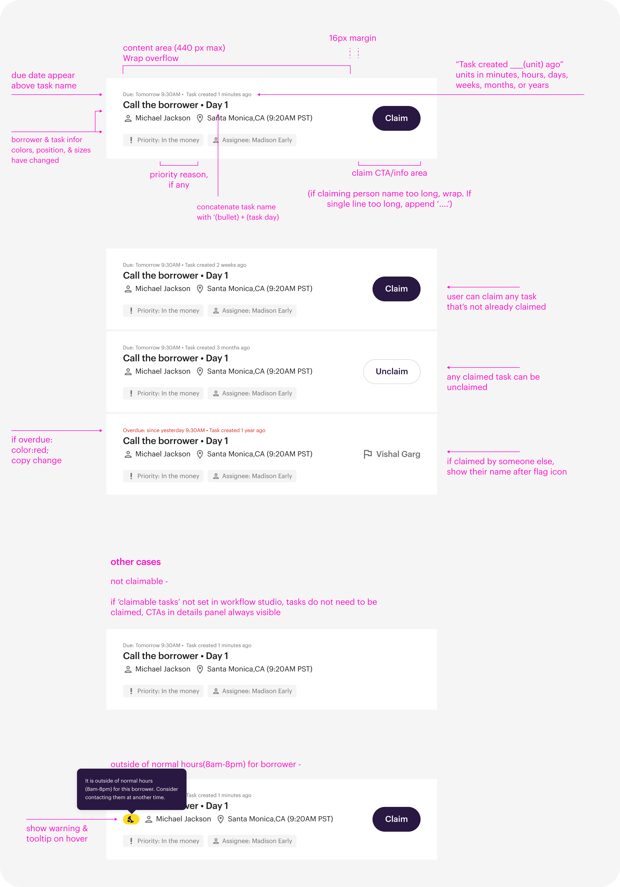

Loan Pipeline
Advanced filtering tool that helps mortgage professionals stay hyper focused on the work that matters in an ever-changing market.


Research Insights
Here are some patterns we noticed:
Detective work- The traits that makes certain loans high priority and not others are often buried in the details of the loan. Without proper indexing of loan traits, teams often had to parse through files one by one to figure out which is worth working on.
Understanding our users
Exploring solutions
We kicked off the project with cross functions leads, created, consolidated, & reconciled ideas guided by user testing with prototypes.

After testing successfully on a general design direction, we started working out the different states & flows to address all of the likely scenarios in our MVP use case.
Results


Workflow Builder and Tasklist allowed managers to track and continuously optimize their workflow strategies.
Early MVP results showed complex task completion time improve an average of 6.2% (From 57 to 53.5 hours including time in queue).